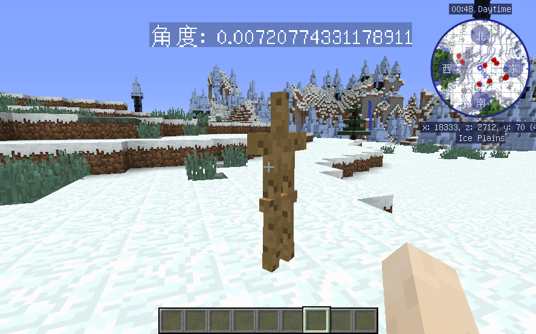
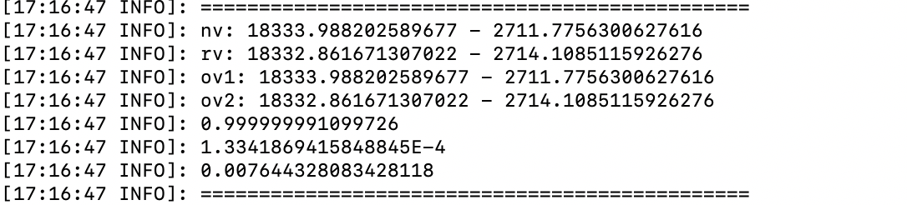
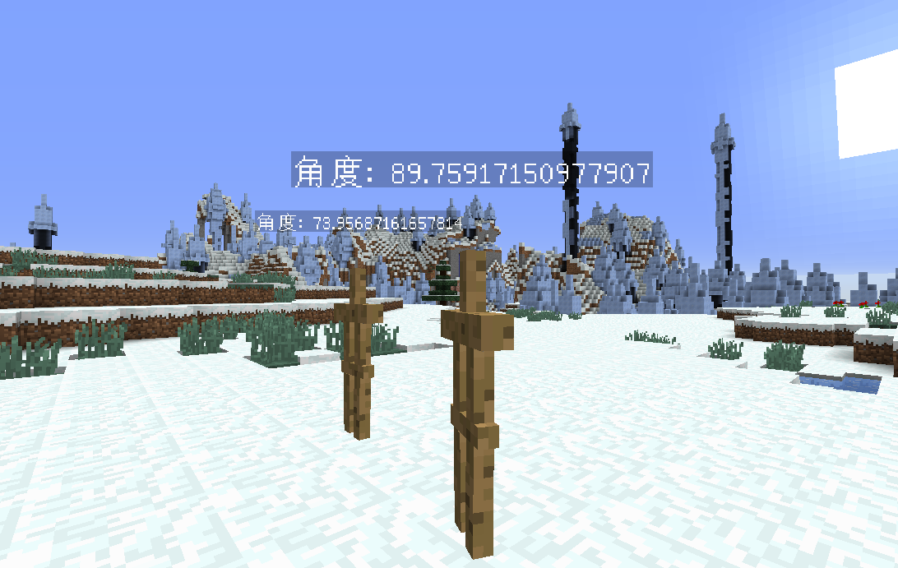
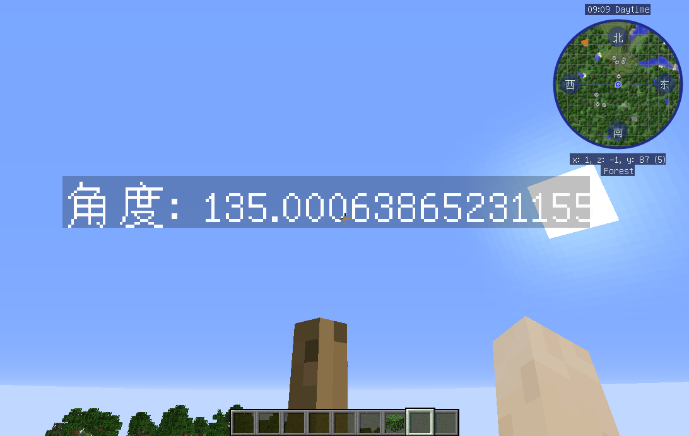

运用三角函数和向量的知识求出角度并运用在游戏中
向量判断坐标法
在开发中运用到了判断角度的功能，由此想到向量有一个求角度的公式
以下公式均使用在平面直角坐标中，斜坐标不可使用
原数量积公式为
变形后可得
由于在平面直角坐标系下，基底垂直，cos值为0所以公式可以变形为
得到坐标之后就可以代入公式到游戏进行测试了
private double angle(Vector nv, Vector rv) {
double x1 = nv.getX();
double y1 = nv.getZ();
double x2 = rv.getX();
double y2 = rv.getZ();
double rad = (x1 * x2 + y1 * y2) / (Math.sqrt(x1 * x1 + y1 * y1) * Math.sqrt(x2 * x2 + y2 * y2));
return Math.acos(rad);
}
具体效果

游戏数值

但是经过我反复的测试，具体的值一直有问题，并不是正确的角度，一直在0.9左右变化
后面经过向量做差之后，与非常靠近0点的向量进行比较后变得正常
修改后的代码
private double angle(Vector nv, Vector rv) {
Vector move = new Vector(rv.getX() - nv.getX(), 0, rv.getZ() - nv.getZ());
Vector zero = new Vector(0.1, 0, 0.1);
double x1 = move.getX();
double y1 = move.getZ();
double x2 = zero.getX();
double y2 = zero.getZ();
double rad = (x1 * x2 + y1 * y2) / (Math.sqrt(x1 * x1 + y1 * y1) * Math.sqrt(x2 * x2 + y2 * y2)); // 余弦值
return Math.acos(rad);
}
具体效果

这样就可以正确的判断角度了。
向量判断结论
通过向量来判断夹角是可行的一种办法，但是会有两个问题，一个是偏差的问题，一个是得出来的角度是在0到π之间的，只能得到二象限角度，也就是不准确，没办法大于180度（可能有，但是我现在不知道）
用向量的办法缺点有很多，而我的目的是为了好好利用上向量数量积的公式（因为刚学到这
通过tan来判断角度
在我查询了一些资料后，发现带伙都使用atan2函数进行判断角度
这种办法就很好了，简洁明了方便。
private double angle(Vector nv, Vector rv) {
double rad = Math.atan2((nv.getZ() - rv.getZ()), (nv.getX() - rv.getX()));
// 这里当rad值是负数的时候，根据图像可知是另外半边，所以用360度一减就可以了
return rad > 0 ? Math.toDegrees(rad) : 360 + Math.toDegrees(rad);
}
通过这种方式判断起来就简单明了很多，而且我查询的资料都是使用这种方式进行判别方向的
具体效果
testaaaa

这里可以看到右边的坐标数值是x=1,z=-1
可以用tan的公式计算一下为-1，也就是135度。
测试结果也没问题。
总结？
以上俩种方式有利有弊，向量的办法也有其他用途，还有投影的用处也会运用在许多地方
这里对上面两种方法进行总结